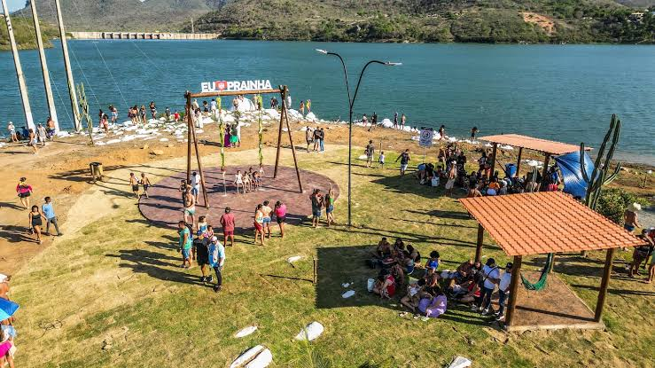
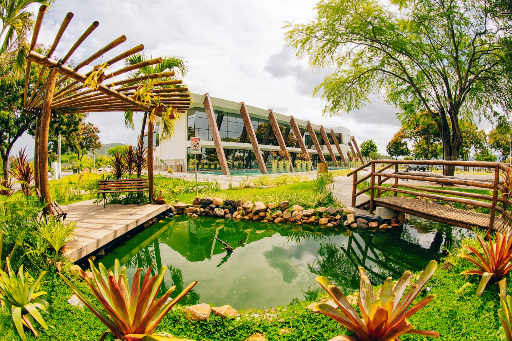
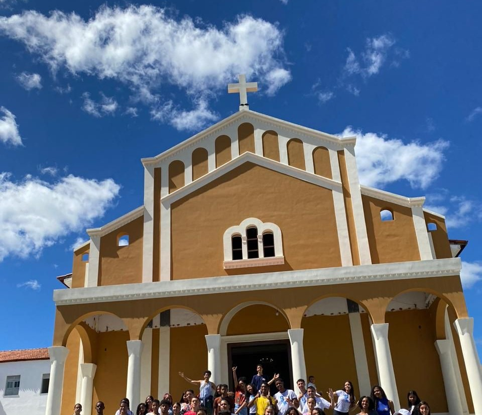
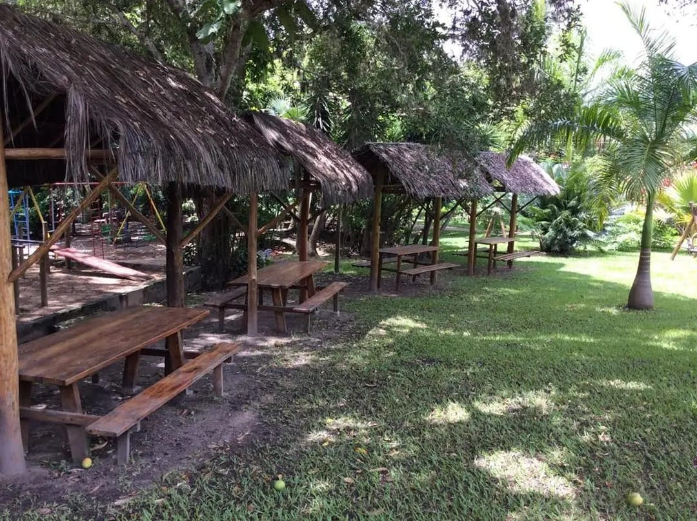

Jequié possui diversos pontos turisticos, desde centros religiosos até praças e formações naturais geológicas. A cidade tem muito para aproveitar.
Conheça abaixo alguns dos principais pontos turisticos da cidade.
Catedral de Santo Antônio

Com sua imponente arquitetura gótica, a Catedral de Santo Antônio é um dos maiores patrimônios históricos de Jequié. Projetada pelo arquiteto francês André Saffrey e executada pelo engenheiro alemão Carlos Kuenh em 1928<
Prainha de Lomanto
A apenas 10 km da BA-130, a Prainha de Lomanto é um verdadeiro paraíso para quem busca lazer e tranquilidade em meio à natureza. Perfeita para momentos em família, oferece uma ampla variedade de espaços para a prática de atividades.
Alto da Prefeitura
O Alto da Prefeitura é um dos pontos mais encantadores de Jequié, perfeito para quem busca um ambiente familiar e momentos de contemplação. Com uma vista privilegiada, o local se destaca como um dos melhores para apreciar o pôr do sol, proporcionando um espetácp class="sobre-ponto"o de cores no horizonte.
Santuário de Jesus Crucificado
Em 1947, os Passionistas da Itália chegaram em Salvador - BA, convidados pelo então Cardeal Dom Augusto Álvaro da Silva, 67, em 2014, ao celebrarem os 60 anos de presença passionista na cidade de Jequié, os Passionistas tiveram a graça de ver a igreja conventual dedicada a Jesus Crucificado ser elevada, pelo bispo diocesano Dom José Ruy Gonçalves Lopes.
Balneário provisão
Um verdadeiro paraíso para quem busca contato com a natureza e momentos de tranquilidade. Com suas águas cristalinas que despencam em um cenário cercado por vegetação exuberante, o local encanta visitantes em busca de lazer, a ventura e belas paisagens.
Pedra Santa

A trilha da Pedra Santa revela um dos mais belos patrimônios naturais de Jequié. Durante o percurso, os visitantes podem conhecer uma pequena gruta dedicada a São José, um local de devoção religiosa que inspira fé e contemplação.
412 2025 -- Benjamin Constant, João Pedro Bispo, Daniel Lima, Kiara Ferreira, Priscila Santos e Samira Batista